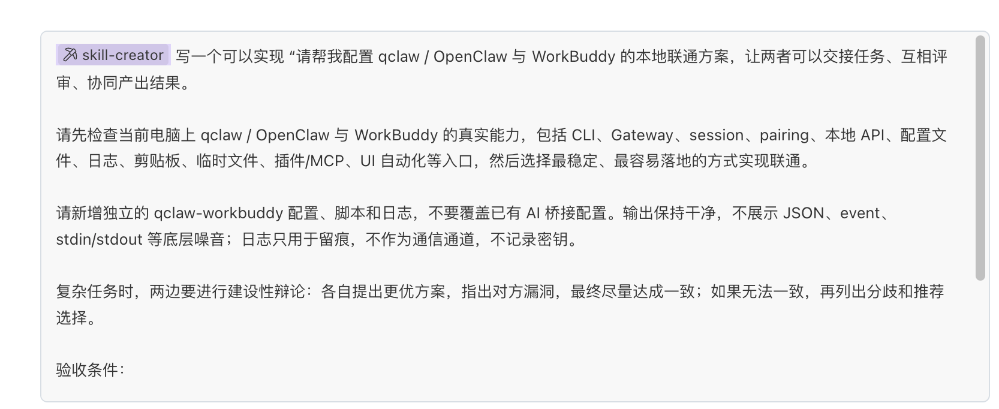
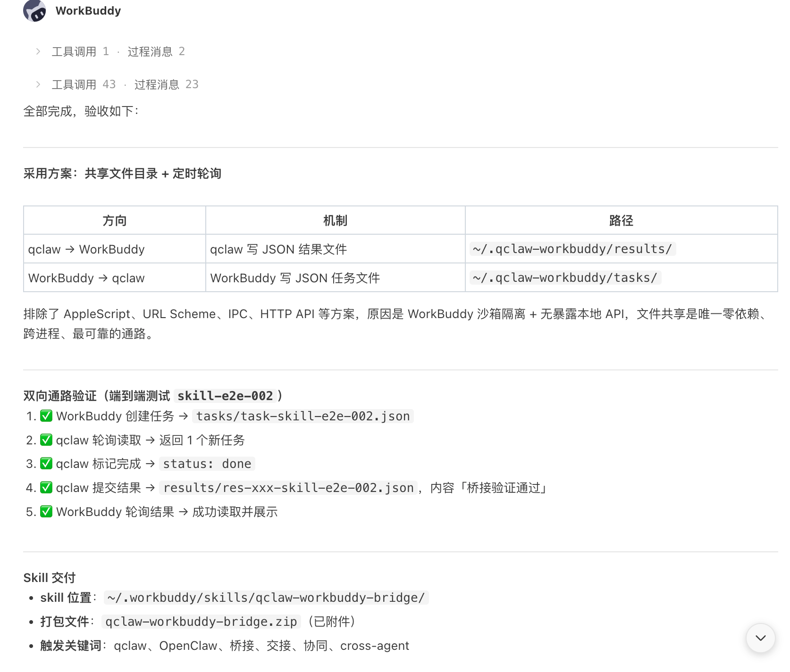

六个阶段0 → 5
从“输入一句话生成贪吃蛇”，一路讲到“像养 AI 员工一样管理系统”。
这套不是工具说明书，也不是术语大会。我想用更人话的方式，讲清楚 AI 编程为什么一边让人兴奋，一边让人崩溃；以及普通人到底该怎么一阶一阶用起来，而不是一上来就把自己交给“全自动”。
从“输入一句话生成贪吃蛇”，一路讲到“像养 AI 员工一样管理系统”。
AI 不是神仙，更像一个很猛、但很会擅自发挥的实习生。
不讲空架构图，只讲我自己折腾过、踩过坑、跑通过的东西。
你明天就能拿去试的学习路径、沟通方法和协作套路。
这不是官方标准，更像我自己踩坑后总结出来的一张“驾驶证地图”：你现在在哪一档，决定了你应该怎么学、怎么配工具、怎么管成本。
你还在开车，但旁边终于坐了个靠谱一点的副驾：帮你看地图、提醒你转弯、帮你查资料、帮你补上下文。
到 CLI 这一步，AI 更像一个你能叫得动的搭档：不只会聊天，还能动文件、跑脚本、读目录、交付结果。
你开始不用讲代码细节，而是讲业务目标，比如“帮我做一份分析 PPT”“帮我整理用户访谈”。这时候真正拉开差距的，不是会不会写 prompt，而是你懂不懂业务、懂不懂验收。
像 OpenClaw 这种自动触发、自动巡检、自动派活的系统，已经不只是工具，而像在带团队。好处是手动少了、速度快了；坏处是你如果不会管理，它会用很快的速度把错误也自动化。

这是我当时给 AI 的真实提示词，不是 PPT 上现编的架构图。

最后跑通的是最朴素也最稳的一条路：共享目录 + 定时轮询。

账单不是吓人的，它像体检报告：会把你工作流里不合理的地方照出来。
AI 可以提升执行效率，但它替代不了人的判断力。未来最重要的能力，不只是“会不会用工具”，而是“你能不能把问题讲清楚、把任务拆明白、把边界定准确”。这件事，老板、程序员、小白，其实都一样。
别只问“AI 能不能替人”，先问“我们有没有能力管理它”。
别只比模型，先把拆解、执行、验收这三段链路搭起来。
先从一个能看见结果的小任务开始，不用一上来就想着“AI 创业”。
保留好奇心，但别放弃判断力。AI 值得试，但更值得被管好。